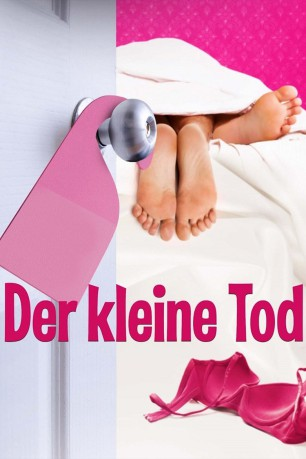

gesehen am 28.08.2015
gesehen am 28.08.2015Alternativ: The Little Death gesehen am 28.08.2015
 
 IMDB-Wertung: 7.1 / 10
IMDB-Wertung: 7.1 / 10  Metascore:
Metascore: 
Die Bewohner einer aus der Distanz betrachtet normalen Vorstadtstraße haben alle eins gemeinsam: Ihr Sexleben bereitet ihnen schwere Sorgen. Da ist zum einen Maeve (Bojana Novakovic) mit einer gefährlichen Sexfantasie, die ihr Partner Paul (Josh Lawson) nicht erfüllen kann. Dann wäre da noch Phil (Alan Dukes), der mit seiner eigenen Frau Maureen (Lisa McCune) eine Affäre anfängt, ohne dass sie davon weiß, ein Paar (Damon Herriman, Kate Mulvany), das versucht, die Folgen eines missglückten Bett-Experiments zu bewältigen, eine Frau (Kate Box), die nur im Leid ihres Mannes (Patrick Brammall) Befriedigung findet, die Telefonübersetzerin Monica (Erin James), gefangen in einem besonders schmutzigen Telefonat, und zuletzt der charmante Nachbar (Kim Gyngell), der sie alle miteinander verbindet. Auf der Suche nach sexueller Erfüllung lernen alle Bewohner der Nachbarschaft viel über ihr eigenes Sexualverhalten, ihr Verlangen, ihre Sehnsüchte und Träume, aber auch über die Konsequenzen, sollten diese Träume Wirklichkeit werden.
Jahr: 2014
Dauer: 96 Minuten
FSK: 12
Land: Australien Studio: UFATonspuren: DTS - ,
Untertitel: Deutsch,
Auflösung: 1080p (1920x808) Größe: 4577 MB
Regisseur: Josh Lawson
Drehbuch: Josh Lawson
Soundtrack: Michael Yezerski
Darsteller:
 Bojana Novakovic als Maeve
Bojana Novakovic als MaeveDatei: X:\2014(G-M)\Kleine Tod. Eine Komödie über Sex, Der (2014, FSK12, 1920x808).mkv seit 27.08.2015
Festplatte: HD 2013(I-Z)-2014(A-Z)
 Es gibt insgesamt 136 Filme in der Gruppe '2014(G-M)'
Es gibt insgesamt 136 Filme in der Gruppe '2014(G-M)'